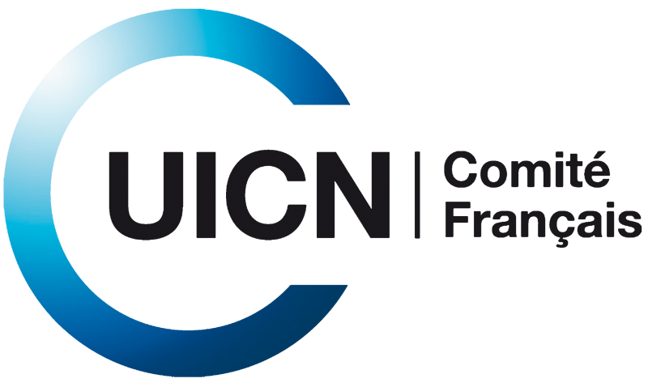
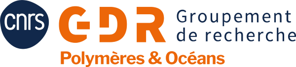
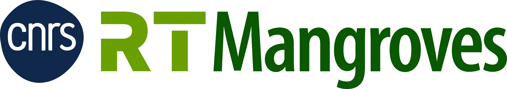
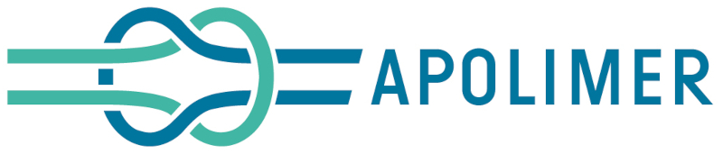
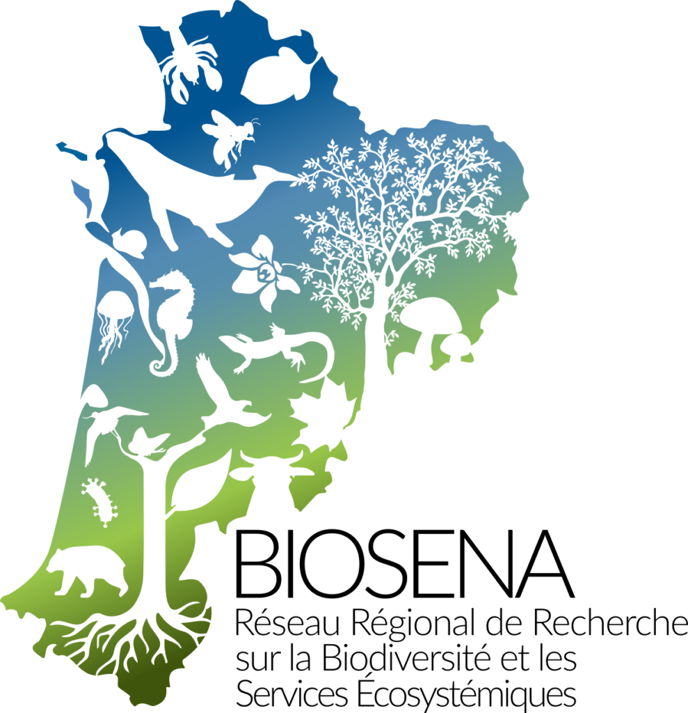
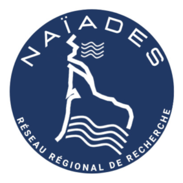
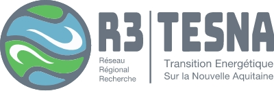
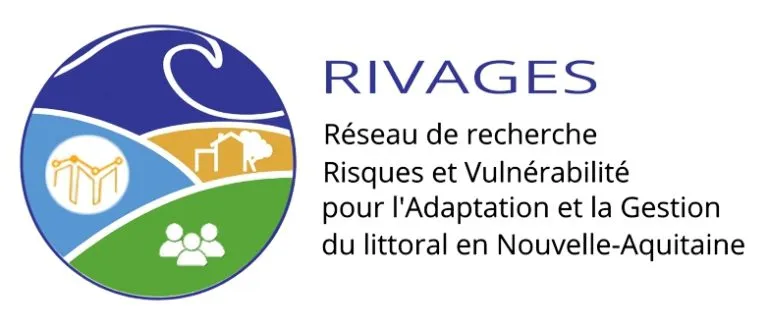
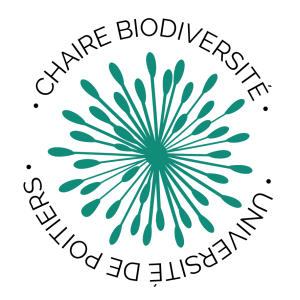
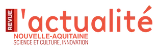

Martin Galilée
Gestion de projets
Je travaille sur des projets scientifiques, environnementaux et territoriaux en combinant coordination, structuration de l’information et création d’outils adaptés aux besoins des équipes.
Mon approche consiste à rendre les projets plus fluides et plus robustes, en articulant organisation humaine et solutions techniques concrètes : gestion de données, outils collaboratifs, annuaires, plateformes web, workflows éditoriaux, automatisation de certaines tâches ou production de contenus.
J’interviens aussi bien sur le pilotage et l’organisation que sur la réalisation technique elle-même, avec une approche orientée usages, clarté et simplicité de fonctionnement.
En savoir plusCréation de contenus

Web
- Réalisation de site intégral pour projet de recherche, réseau ou autre
- Sur hébergeur commercial ou institutionnel (CNRS, université, …)
- Cartes interactives web, annuaires, applis, newsletter, actualités
- Solution sur mesure adaptée à vos besoins, données collectées par mes soins
Graphisme
- Création et mise en page de diapositives (PowerPoint, …)
- Présentation de recherche, plaidoyer, bilan de projet
- Outils de médiation interactifs
- Illustration scientifique rigoureuse
Rédaction
- Rédaction, relecture, traduction EN-FR
- Textes scientifiques, de médiation et de transfert
- Compte-rendu de conférence, white paper, article de médiation, écrit académique, …
Ils m'ont fait confiance










Me contacter
N'hésitez pas à m'écrire ou à m'appeler pour me parler de votre projet ! Je vous ferai un devis après discussion de vos besoins et contraintes.
Coordonnées